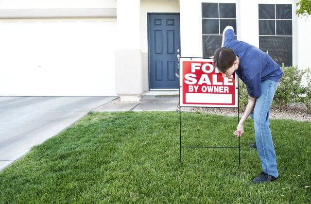

1. Prepare to Sell
Before you put your home on the market, it must be ready to sell. This includes cleaning, maintenance and any necessary repairs or improvements. A fresh coat of paint can make your home more attractive to potential buyers. You can also consider decorating your home, which involves arranging your furniture and decor to show off your home's best features and make it more appealing to buyers.
2. Listing
Pricing your home is a critical step in the selling process. A licensed real estate agent can provide a comparative market analysis (CMA) that compares your home to similar properties in the area to determine its value. Factors such as location, size and condition affect the price of your home. It is important to be realistic about the value of your home and set a price that is competitive with other homes on the market. All of this information will be posted on the MLS, a platform for buyers to view homes.
3. Receiving Offers
Once your property is on the market, potential buyers will begin to show interest in the property. They can make an offer that you can accept, decline or reject. You may have to consider the buyer's financing arrangements, preferred settlement date and any conditions of the sale, such as a home inspection or repairs. Your agent will help you understand the merits of each offer, including any legal or financial considerations that may affect the sale.
4. Closing the Sale
Once you receive an offer on your home, it's time to close the sale. This includes negotiating the terms of the sale, including price, closing date and any conditions of sale. Your real estate agent and lawyer can help you through this process and ensure that all necessary documentation is available and your rights are protected. Once the sale is complete, arrange for the transfer of title and any outstanding payments such as mortgage payments or property taxes.